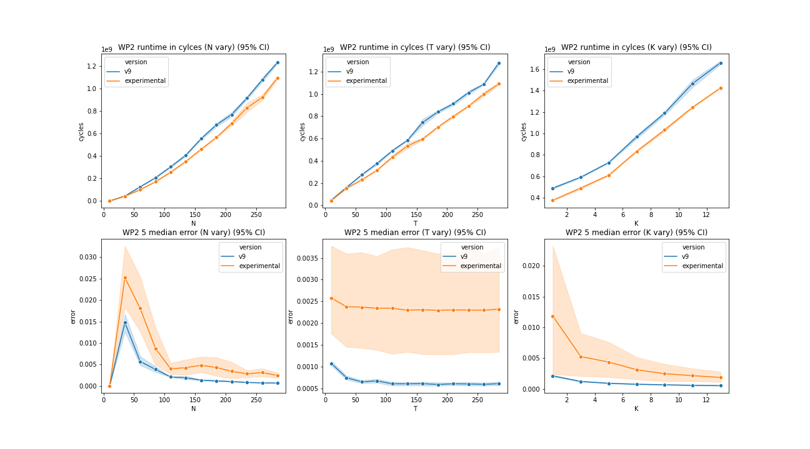

A small study of shuffling
Abstract
This small writing is the result of our Advanced System Lab course project at ETH 2022. In this context, we were tasked to optimize algorithms present in arXiv:1908.08619 [cs.LG]. This particular writing aims to optimize random permutations presents in Algorithm 2 of the paper.
The discussion will start with an introduction without too much formalism. We'll then move on to the story of optimizing shuffling. We divided the journey in several steps. Each time we tried either to collect some clues on the problem, or to test some ideas. You'll see that through the discussion, we'll tried two of our own ideas. The first is consists of ordering shuffled access in preprocessing step and reuse the swaps in order to increase both spatial and temporal cache locality. Our second idea, named the Ninetails, was foolishely aiming to enhance locality. Instead of having a sorting preprocessing step, we tried to get better cache prefetching. Our first idea actually worked and the second actually didn't. We'll describe both these experiment in details and show our reasonning through the discussion. Let's now start with the introduction.
Introduction
Acording to Wikipedia, "shuffling" means:
A procedure used to randomize a deck of playing cards to provide an element of chance in card games. Shuffling is often followed by a cut, to help ensure that the shuffler has not manipulated the outcome.
In our case, we'll shuffle some list of integers. The algorithm 2 in arXiv:1908.08619 [cs.LG] can be seen bellow:
The idea of the algorithm is to compute something called the shapely value. In the paper's case it indicates how much data carry a certain point. The paper provide a precise algorithm in order to compute the shapely value as well as an approximation that relies on randomness which leads to the Algorithm 2. The algorithm has a better complexity than the first one. However, it tradeoffs accuracy with performance. You can observe above the Algorithm 2, it is important to note that the shuffling will appear T times for each testing point.
We will now switch to the actual story of optimizing these permutations. We will simply describe the journey in a linear fashion and at the end we'll conclude and propose some future work.
All the experience bellow were realized in the following settings. The CPU model for all benchmark is an i7-7700hq at 2.8 GHz with turbo boost disabled. All pieces of code were compiled with the following command:
gcc -O3 -mavx2 -ffast-math -mfma -march=skylake
All benchmarks were run on PopOS 21.10. The version of gcc is 11.2. Let's get to the actual experiments.
Act 1 - The foolishness
Our actual first try was a total mess. Indeed, as any unreasonable programmers, we tried to implement a shuffling without doing any prior research on internet. Very foolishely, we ended up implementing an solution as seen bellow:
void generate_random_permutations_v0(permutation_args_t* args) {
int* temp_array = (int*) malloc(args->size * sizeof(int));
assert(temp_array != NULL);
memcpy(temp_array, args->indices, args->size * sizeof(int));
int remaining = args->size;
for (int i = 0; i < args->size; i++) {
int r = args->rand_fun() % remaining;
args->permuted_indices[i] = temp_array[r];
for (int j = r; j < remaining - 1; j++) {
temp_array[j] = temp_array[j + 1];
}
remaining--;
}
free(temp_array);
}
The idea was to select the elements from the tail to the head of the list. Then we would insert the element at some random place and shift all the next elements. The first thing we tried was to remove the allocation (v1) in the function but it didn't add much as it only adds a small constant overhead compared to the squared complexity. We then decided to compare our implementation with the standard cpp library using std::random_shuffle... The results speak for themselves.
Result: No difference could be significantly observed from the naive (v0) and the barely optimized v1. This means that allocation is not the bottleneck. We also observe that the curve does looks like scaling in which confirms our thought. Moreover, comparing with the standard library, we see a tremendous difference. Therefore, we need to investigate.
What to investigate next ?
Here are all the potential flaws:
- modulo: 30 cycles per call (constant overhead)
- rand: ~70 cycles per call (constant overhead).
- shifting implies complexity!
Definitely, we need to do a simple google search.
Act 2 - Back to sanity
We discoverved an algorithm called Fisher Yates that is illustrated bellow. It performs similarly as in our previous algorithm, however, instead of shifting, it simply swaps the elements. From the cpp reference documentation, std::random_shuffle is likely to implement this algorithm.
for i from n−1 downto 1 do
j ← random integer such that 0 ≤ j ≤ i
exchange a[j] and a[i]
With that in mind, we tried to implement our own Fisher Yates base version.
Hypothesis: shifting imply a complexity of n^2. Using an implementation can only be better as the size increases.
Results: The complexity of n^2 was indeed the source of the problem. Our implementation even beats the std random shuffle. We can observe on the graphs
What to investigate next ?
Currently, we have two performance main suspects with our current version:
- The random number generation
- The modulo
We'll therefore investigate of a possible better way of generating the random numbers. We'll focus on the rand function. How fast it is? What would be the alternatives?
Act 3 - The witch hunt
In this section, we will try to understand what could be the cause of the overhead. More precisely, we'll investigate the random number generation. As observed on the Godbolt window bellow, the rand function call is not inlined (line 13 of the assembly) and we informally measured that the procedure would take around 70 cycles with a possible huge variation (some spikes sometimes).
We will proceed to three experiments through this section. Firstly, we will observe the runtime of different ways to permute some random numbers. Secondly, we will try to qualify the randomness of each method. Thirdly and lastly, we'll look how much time each method takes to only generate random numbers (without the permutations).
Experiment 1 - How much time to permute
Hypothesis
rand seemed to be slow and is not inlined. If we can get rid of the overhead of the function call, we will get a speed up. In a first time, we'll try to use this weird urandom thing available on Unix systems. It is a device (like a storage disk or any other device) that can be read and provided random numbers. We think that the cost of reading a file could be compensated by not having to perform function calls to get the pseudo randoms. In a second time, we tried to implement a function seen on stackoverflow. Indeed, it seems that generating pseudo random numbers can be done using a linear congruential generator. The rand function is said to be using such a generator by reading the documentation. However, we don't have access to the source code and we cannot inline the call. The latter is possible if we implement our own function as you can see below. We would expect the results in this order (from slowest to fastest) random_shuffle -> base -> urandom -> fast_rand.
inline unsigned int fast_rand(permutation_args_t* args) {
args->seed = (214013*args->seed + 2531011);
return (args->seed>>16) & 0x7FFF; //ouch! you'll see later :(
}
Results
The experiment was comparing different versions for permuting 32bit integers arrays as follows:
- random_shuffle: the standard c++.
- v2: fisher yates baseline.
- v3: urandom: open the file and copy the random, then using them to permute.
- v4: fast_rand from stackoverflow instead of rand in the baseline.
The results are intersting, the inlined fast_rand function seems to be way faster than all the other. At this point in the discussion, we think that it might be too good to be true. Anyway, we'll see in the following section. The next fastest version is the urandom method. This raises a question: How much time does it take to generate the random numbers? Indeed, what if the pseudo random numbers of some method are less random than one other? This might increase temporal locality and therefore provide a speed up. This also raise the following question: how is the randomness of each method. Let's first observe the time to generate the random numbers and then, we'll find out the quality of the randomness.
Experiment 2 - How much time to purely generate the randoms?
Im this subsection, we want to find out how much time is needed to generate the random numbers with each method.
Hypothesis
Its actually not all clear to us. Obviously we would suspect our baseline using rand to be slower than fast_rand but we cannot tell for urandom.
Results
The experiment was reaslized by simply generating some random number, storing them in some array and retaining the amount of cycles the whole thing took (note that there is a function call for every run). Note that we used a "dummy" version that simply compute the time it took to write in some array (as a witness).

First of all, we need to note that the values in this experiement were very jittery while staying in the same order of magnitude. We can see that no differences can observed between rand and fast_rand (are we memory bottleneck?). Moreover, we can observe that urandom is taking several thousands cycles against less than one hundred cycles for the other methods. All results follow the same linear order for all sizes. What happened? urandom was supposed to be faster than rand? Why fast_rand generation is not faster than the rand one?
In fact, we are starting to suspect the nature of the generated random numbers. However, before looking into that, let's observe some way to qualify the randomness of the generation in the last subexperiment of this section.
Experiment 3 - Entropy
In this section we'll try to get an idea of the randomness that each method provides. For that, we'll look at the entropy. Entropy allows to quantify the amount of information contained in a sequence of bits. Here, we'll apply this concept to ranges of integer and thier appearance frequencies through a pseudo random generation process.
We define our problem formally as a range of natural numbers . Our pseudo random generation must follow an uniform distribution defined as follows.
The entropy of is then defined in bits as follows.
Obvsiously, we are talking about pseudo random numbers and therefore, this entropy is only and ideal utopian vision. Nevertheless, we are eager to compute the entropy for each version. Let's get to the expermient.
Hypothesis
From the last experiment, it is clear that something isn't working as we thought. We expect rand to produce correct entropy and we expect urandom and fast_rand to be biased and produce smaller entropy as rand.
Results
The results can be observed bellow. The data of ground_truth is simply with being the size. Hmm. That's weird, rand and urandom have the same entropy. We have a possible explanation that we'll not prove formally. We think that it might be related to locality. We suspect urandom to produce a sequence of randoms as variate as rand but in a less scattered fashion. Meaning that the randoms will all evenly appears but with the next random to be generated to be close to the last one. This would allow for more spatial and possibly tempral locality. Note that we are saying this with a grain of salt as we'll not try to prove it. Now, let's get to fast_rand.
fast_rand is performing very poorly here. In fact, the entropy stays the same even as the size increases. Would this means that the randomness of fast_rand is decoupled from the size of the array? There are two possible explanations here. Either fast_rand always produce random_numbers in the same range (smaller than the size of the array) or it produces scattered island of randoms. Let's see this in a further expermient.
Experiment 4 - Frequency of appearance
In this last subsection, we'll setup an experiment that should allow us to find out the appereance frequency of the random numbers among each method. Why? Because it seems the fast_rand method above is performing to well performance wisley and too bad on the randomness side. Let's find out.
Hypothesis
Ouch. Ouch and Ouch... While performing the last experiment we noticed something very terrifying in the fast_rand code. Let's oberve it again bellow.
inline unsigned int fast_rand(permutation_args_t* args) {
args->seed = (214013*args->seed + 2531011);
return (args->seed>>16) & 0x7FFF; //NOOOOOO
}
You can observe a AND with 0x7FFF (32767 in base 10). This means that the random numbers will always lies in the range . This must have a positive effect on the cache temporal locality and this is what we'll find out now.
Results
As we can observe, the plots of rand and urandom looks correct. We ran the experiment and therefore, we would expect every number in the range to appear around times. This is what we got with the rand and urandom version. However, we got the expected biased result with fast_rand. This explains why it was faster. The temporal locality was greatly enhanced because the scattered accesses were much likely to appears in a nearer position as opposed to rand or urandom. Moreover, there could be possibly less cache conflict with fast_rand. Let's just have a final look at the following plot that shows the amount of cycles it takes to permute the array with pregenerated random numbers:
In this small experiment, we pregenerate randoms and we compute the amount of cycles it takes to swap the elements in the array. We can indeed see that it is faster with fast_rand and equally likely* between rand and urandom. All versions must have the same expected permutation time. Here we can see that fast_rand has this same faster trend and this really endorse our above results and points the reason of the speed-up to be a better cache utilization.
This experiements really showed two things. Firstly, a possible rabbit hole while optimizing random permutations is to develop an uncorrect implementation that would be faster. Secondly, it might be an indication that in order to get it faster, we would have to tradeoff randomness with performance.
We will now switch to the next section of this discussion were we will try out some hyporthesis with the hope that it would increase the efficiency of our solutions.
Act 4 - Reordering the scattered accesses
In this section, we'll investigate one of our hypothesis. In a first time, we'll explain our idea. In a second time we'll state our hypothesis and in a last time we'll observe the results. Lastly, we will conclude and look for further ideas. First, let's get to the explanation.
What if we reoreder the Fisher-Yates accesses? Let's model Fisher-Yates as a graph over cache lines on the array. We can then define the edges of this graph to be the swaps. We hypothetize that if we swap the elements in a sorted order, we could increase spatial locality because we would swap with elements that are more likely to be in the same cache line in a near futur. Moreover, we could maybe allow some prefetching by the CPU if the accesses are more ordered and less interleaved or scattered.
Our method looks as follows:
1. Build the graph were each node is made out of 16 integers (64B for a cache line). The index of some element in the graph is i >> 4.
2. Simulate Yates and record the swaps in an array as pairs (source, target).
3. Sort lexicographically the pairs (source, target).
4. perform the permutation of the array with the sorted swaps.
TODO Grapix put image with graph here.
Of Course there is a huge overhead from sorting since its and Fisher-Yates is . However, we could think of a use case that could benefits from it. Indeed, if we generate the swaps once and if we reuse the swaps over and over to shuffle multiple times some list, maybe in this case we could get a speedup.
It is very important to note that in our method we decoupled the random number generation and the actual permutation. Indeed, we now generate some randoms in order to build the graph by simulating yates. After that, we use the lexicographically sorted swaps to permute the array. With that in mind, let's switch to our hypothesis.
Hypotesis
We will compare the permutation time of our method called ordered_accesses against the permutation time (without the generation time!) of rand, fast_rand and urandom. We expect that ordering accesses by sorting them would allow a speedup. Let's observe the results now.
Results
That's very interesting. We see that the unordered rand, urandom and fast_rand all performs the same. Note that the size is smaller than 32000 and therefore, fast_rand is not tricking us with a reduced range. More precisely, we see that the ordered version is faster than the other. In our opinion, this could be due to prefetching. We think that the CPU is more likely to see some sequential access pattern with the target cache lines indices always following sequentially. Let's also reason in the following manner. We think this technique is likely to work only if Fisher-Yates results in swaps with elements in same or adjacent cache lines. In fact, if the size of the array grows a lot and the accesses are to scattered, we think this technique will be unable to produce any speedup as the prefetching would not be detected by the CPU. However, we pronounce these words with a grain of salt as we didn't checked this hypothesis. By the way, couldn't we also check the randomness? We think yes, however, we have to admit that the following dice test has some flaws in it...
Indeed, it only checks for the frequency of appearance of the random numbers and here, if the elements do not get moved too much to the same bucket in the array. However, we think we should also check the distance between the current generated random number and the next one. We have no formal words yet to express this idea but this distance should certainly be related to some probalistic distribution. As a mental experiment, if you draw the number 56 in the range [0, 100], then 57 followed by 58, that should give an insight on the distribution of the numbers given thier order of appearance. In fact, leaving this as an idea, we think we should check the randomness of the numbers over two axis: The frequence of appearance and probabilisitc distribution of the distance of appearance. Nevertheless, we can see on the dice test plot above that at least, as a sanity check, the appearance of the numbers are similar than using our baseline. Please, aslo note that the swapping represents only a couple thousands of cycles but sorting is way more expensive. Therefore, the question needs to be asked. How can we do better? Let's see this in the next section :).
Act 5 - Small sort
As the entitled, we realized something very interesting from the access pattern of Fisher-Yates. You can observe the algorithm bellow. Fisher-Yates takes the elements from the tail (index i growing downward) of the array and select an element to swap with in the remaining ones (some j <= i).
for i from n−1 downto 1 do
j ← random integer such that 0 ≤ j ≤ i
exchange a[j] and a[i]
Do you see the relation with sorting? If we have an array of size 96 the tail of the Fisher-Yates accesses might looks like this if the pairs are of the form (i, j) meaning (tail, some scattered element).
(95, 54), (94, 36), (93, 41), ..., (76, 72), ..., (1, 0)
First of all, note that all pairs are already sorted by first element in decresing order. This is very good as if we then look at the cache line index in our graph (considering 32bit integers, 16 integers per cache line).
(5, 3), (5, 2), (5, 2), ..., (4, 4), ..., (0, 0)
This is very interesting as we can note that our previsous lexicographic sort was certainly overkill. The only thing we have to sort is 16 integers sequences! Indeed, we simply need to sort the list by the second element for a list that is already sorted by first element. Since there are only 16 elements of this kind we could wonder if there are no goofy way of processing this. Indeed, this opens the door of "how to efficiently sort fixed size integers array of length 16". This is what we are going to cover in the next paragraph.
After the realization we highlighted in the previous chapter, we decided to google "small array sorting method". We found various stackoverflow posts and decided to try two things:
- insertion sort
- network sort of 16 elements
Indeed, insertion sort is but was reported to work fast on very small arrays. For network sort, we had to dig a bit. Marianczuk 19 reported that the network sort could be accelerated by taking advantage of branchless moves which we wanted to try. Moreover, Bramas 17 reported that a network sort could be implemented using branchless AVX-512 instruction. However, since we don't have an AVX-512 capable CPU (sniff) we'll propose our own, maybe suboptimal AVX2 network sort (we didn't find an implementation on internet).
Just to clarify what a network sort actually is, let's observe the following picture:
That's the Green network from Marianczuk 19. The idea is that any element (horizontal lines) get compared with another (vertical line) and possibly swapped depending on thier values. We implemented the Green network following the paper. However, we didn't use assembly, we implemented the swaps using ternary operators and the compiler was able to replace with branchless moves (source code here (TODO Grapix)). For the AVX version, we followed the bellow schematic:
You can observe two networks, 16 element one and a 8 element one. Note that the 8-width network is reused two times in the 16-width one. In fact, using AVX2 over 32bits integers allowed us to only manipulate up to 8 elements at a time and so we reused the 8-width network extensively. Only the cross part in the 16-width netowrk was slightly tricky but we managed to get a correct implementation. The source for the AVX network can be found here (TODO Grapix). It is made out of a permute as well as a compare operation processed with a mask. With that in mind let's switch to some experiments.
The very first experiment we did, we decided to run a latency microbenchmark on our three versions (16-width sorting) to demistify thier powers and classify them. Here are our findings (same CPU and flags as advertised and 100000 runs):
- Insertion sort: 648.19 cycles
- Network sort conditional moves: 68.16 cycles
- Network sort AVX2: 91.11 cycles
First, we just want to mention that the results were stable and repeatable for random arrays as input. Very interestingly and sad at the same time, we can observe that our AVX2 version was beaten by the conditional move version. It reasonate well with some of what we read on internet that AVX512 which some special instructions that allow for a faster computation. Finally, we note that insertion sort is way slower and we get an idea of how each method should perform. What we'll do now is the following. As in last experiment, we'll compare our rand baseline with our ordered accesses.
Hypothesis
Again, we'll proceed in two times. Firstly, we'll generate the random numbers and secondly we'll permute the element as in Fisher-Yates. However, this time, we'll sort the accesses using our sorting networks and we'll take into account the preprocessing time of sorting. We will therefore end up with three plots, one for the time it took to generate the random and sort them, another one for the time it took to permute the randoms and a last one indicating the total runtime. Our hypothesis is as follow. We expect the preprocessing step to be obviously more costly when sorting but we expect to gain upon permutation. We hope that the total runtime can be improved.
Results
Okay, well... That's cool and sad at the same time. We were right that again that even sorting using network sort is costly as we can see on the first plot. And we also correctly predicted that the permutation time would be faster using sorted accesses as we can see on the second plot. However, the overall runtime containing both sorting and permuting shows that the runtime is dominated by the sorting phase and therefore our ordered accesses versions are slower. Note that we also compare with the standard c++ std::random_shuffle which is also faster than our methods. Nevertheless, Isn't there any use case where our method could shine? Indeed, we see that the cost of permuting is lower using our method as compared to the baseline. Therefore, why not trying to permute multiple times with the same swaps? Putting this differently, how much permutation using the same swaps would allow a speedup of our sorting method against our baseline? We'll see this in the next act right now.
Act 6 - Small Smart sort
In this section we'll try a last experiment in relation to the following question: Would reusing the same swaps over and over actually allow for compensating the original cost of sorting?
Hypothesis
It is mathematical that reusing the same swaps will lead to a speed up at some points as it is similar as proving that two lines with different slopes do contains and intersection point. Therefore, our main hypothesis here is that we will find the number "x" of permutations from which our sorting method would actually start being benificial over our baseline. For this experiment we will give ourselves an array of length 2000, generate the random numbers and the swaps once. After that, we'll shuffle the same array over and over. Let's see the results.
Results
Youhou! We actually get a speedup from performing 10 permutations for our version using the network sort and 15 using the insertion sort. This shows that the preprocessing step'cost can actually easily be overcome. However, how do we assert of the randomness of our method? Indeed, we are far for providing formal randomness proofs of our work. As seen bellow, we will again provide a dice test for both sorting methods.
Again, it looks like the same but in our opinion, that would really be a point to refactor in our discussion. Despite this, we still have another way of comparing the randomness. We wrote the discussion trying to solve a "real world" problem. Indeed, as said in the introduction we tried to accelerate the random permutation of Algorithm 2 in this paper. We therefore have plots showing both the runtime and the 5% error of our solution as you can see bellow.

The plot is the run time regarding the parameters N, T and K of the algorithm for the first line of plots. The second line of plots represents the 5% error for each of the N, T and K parameters. Our version using sorting is the version named experimental and we compare it against our 9th optimized version which does not uses a reordered shuffleing method. The v9 version only generate the random numbers once per test example. Both version, our experimental and v9 are compared against our baseline for the 5% error. The idea of this plot is to note very informally that the randomness deteriorates slightly (note the scale of the y axis of the error plots). T being the number of permutations, the error seems to be greatly wider when increasing T. That could be explained because the biases implied by the sorting method would actually be repeated for each new T and so more iterations seems to produce a more unstable result.